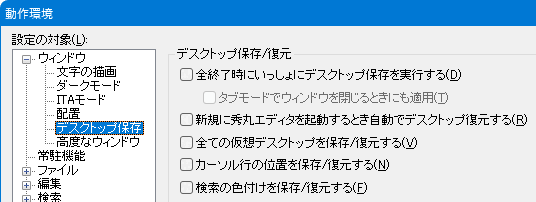

「デスクトップ保存」/「デスクトップ復元」は、秀丸エディタで開いているファイルのウィンドウサイズと位置を保存・復元します。
Ver.8未満では、「デスクトップ保存/復元」は1つしか保存できませんでした。
Ver.8以降は「名前をつけてデスクトップを保存」も可能になり、複数の状態を保存できます。
「デスクトップ保存」は、デフォルトでは以下の場所から実行できます。
「デスクトップ保存」は、以下のウィンドウ(タブ)は対象外です。
保存される情報は、基本的にはウィンドウの「サイズ」と「位置」です。ウィンドウの分割状態やIMEの状態、アクティブなウィンドウ(タブ)など、保存しない状態もあります。
設定で有効にすれば、以下の内容も保存できます。
Windows 10の仮想デスクトップ
カーソルある行
設定がOFFでも、以下の条件がそろえばカーソル位置は復元されます。
「名前をつけてデスクトップを保存」は、「ウィンドウ」メニューから実行しますが、デフォルトでは表示されていません。その場合は以下の手順で表示させてください。
「デスクトップ復元」は、デフォルトでは以下の箇所から実行できます。
「ウィンドウ」メニュー
「常駐秀丸」の右クリックメニュー
「起動オプション」
起動オプションの使い方は「第IV部〜テキスト編集を極める！！ 起動オプションを使ってみよう」を参照してください。
オプションは「/e」または、「/e:保存したデスクトップのフルパス」になります。
復元する場合、現在開いている秀丸エディタがあると閉じようとするので、必要に応じて保存してください。
「デスクトップを開く」は、「ウィンドウ」メニューから実行しますが、デフォルトでは表示されません。「名前をつけてデスクトップを保存」と同じ方法でメニューに表示させてください。
「デスクトップ保存」/「デスクトップ復元」の設定
設定は「動作環境」-「ウィンドウ」-「デスクトップ保存」で行います。
